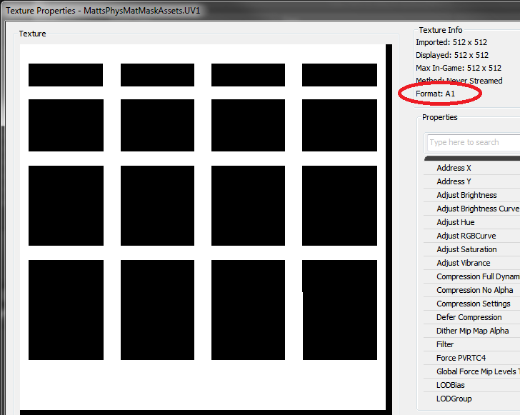
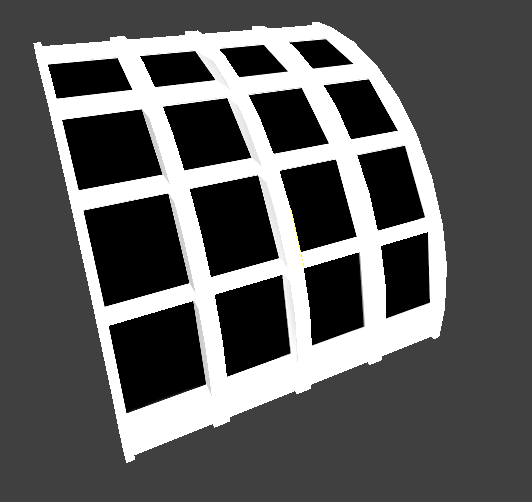

UDN
Search public documentation:
PhysicalMaterialMaskCH
English Translation
日本語訳
한국어
Interested in the Unreal Engine?
Visit the Unreal Technology site.
Looking for jobs and company info?
Check out the Epic games site.
Questions about support via UDN?
Contact the UDN Staff
日本語訳
한국어
Interested in the Unreal Engine?
Visit the Unreal Technology site.
Looking for jobs and company info?
Check out the Epic games site.
Questions about support via UDN?
Contact the UDN Staff
物理材质蒙板
概述
物理材质蒙板提供可以在图片材质的两个不同部分使用两种物理材质的功能。可以使用物理材质蒙板在静态网格上创建独一无二的特效，不需要多种元素和材质。举一个简单的例子，一个具有一种材质的窗口网格物体，其材质有一部分是木头（窗口框架）而另一部分是玻璃（窗口）。您可以将物理材质蒙板设置为在击中该材质的玻璃材质部分时播放一个玻璃破碎的声音，而击中该材质的木头材质部分时发出木头撞击的声音。
使用物理材质蒙板
物理材质蒙板由 Material（材质）或 Material Instance（材质实例）上的四个属性组成。
- Phys Material Mask - 它是一个作为蒙板使用的一位贴图。使用的物理材质由碰撞过程中击中的像素的颜色（黑色或白色）决定。
- Phys Material Mask UVChannel - 这是应该用于遮罩的贴图的 UV 通道。 该 UV 通道应该包含用于将蒙板贴图映射到一个特定静态网格物体的贴图坐标。
- Black Physical Material - 如果碰撞过程中击中的是蒙板贴图的黑色部分，那么使用该物理材质。
- White Physical Material - 如果碰撞过程中击中的是蒙板贴图的白色部分，那么使用该物理材质。
一位黑白贴图
一位黑白贴图是每个像素由一位表示的贴图。如果这位是 0，该像素是黑，而如果这位是 1 ，那么该像素是白色。当与静态网格物体发生碰撞时，物理材质蒙板系统会使用该贴图决定要使用的物理材质。
导入一位贴图
有两种方法可以导入一位贴图。- 您可以使用一个导入程序。例如，支持保存一位 bmp 格式贴图的 Adobe Photoshop。 然后您就可以像往常一样将该 bmp 文件导入到编辑器中，而它会自动将其检测为一个一位贴图。
- 您可以在 alpha 通道中导入一个附带您的物理材质蒙板的 32 位贴图。 出现贴图导入对话框时，在压缩设置目录下方选择 TC_OneBitMonochrome。您还可以以后在贴图浏览器中选择该压缩设置。
 使用 OneBitMonochrome 压缩会删除您的贴图 RGB 通道，并将 alpha 通道转换为一个一位贴图。 如果您想要使用您的材质漫反射贴图的 RGB 通道作为向导，在 alpha 通道中创建您的一位贴图，那么可以使用这个方法。
使用 OneBitMonochrome 压缩会删除您的贴图 RGB 通道，并将 alpha 通道转换为一个一位贴图。 如果您想要使用您的材质漫反射贴图的 RGB 通道作为向导，在 alpha 通道中创建您的一位贴图，那么可以使用这个方法。
示例设置
这是一个使用以下窗口网格物体的设置示例。
 在导入该网格物体之前首先要做的是，为网格物体贴图创建 UV 坐标集。该工作流程与创建您导入的任何网格物体的 UV 完全相同。如果在 UV 通道 0 中贴图的默认坐标集可以使用，那么您不需要自己创建。这些是我所创建的 UV 坐标，它们在网格物体的 UV 通道 1 中：
在导入该网格物体之前首先要做的是，为网格物体贴图创建 UV 坐标集。该工作流程与创建您导入的任何网格物体的 UV 完全相同。如果在 UV 通道 0 中贴图的默认坐标集可以使用，那么您不需要自己创建。这些是我所创建的 UV 坐标，它们在网格物体的 UV 通道 1 中：
 然后我已使用一个图片编辑程序。例如，Photoshop，创建我的一位贴图，然后我将它导入到编辑器中。
然后我已使用一个图片编辑程序。例如，Photoshop，创建我的一位贴图，然后我将它导入到编辑器中。

黑色区域代表窗口，而白色区域代表框架。 还要注意红色圆圈。 该贴图的格式为 A1，必须为物理材质蒙板使用这个格式的蒙板贴图才能正常工作。 如果在窗口网格物体上对蒙板进行映射，那么蒙板会如下所示：
正像您所能看到的，黑色区域与窗口相一致，而白色区域与窗口框架相一致。 现在只剩下最后一项工作在材质上设置蒙板，它是在材质上设置一些属性的简单方式。 这一步完成后，如果我们有一个有效的白色和黑色物理材质，那么我们准备继续向前进行操作。请参阅该链接了解更多有关物理材质的信息。
这一步完成后，如果我们有一个有效的白色和黑色物理材质，那么我们准备继续向前进行操作。请参阅该链接了解更多有关物理材质的信息。
工作原理
当某行检测到击中一个静态网格物体，虚幻会查找击中的三角形以及该三角形上的图形材质。如果材质具有有效的物理材质蒙板设置，那么查找贴图直到找到一个一位贴图，查出被击中的像素。如果该像素为黑色，行检查会返回黑色物理材质。如果该像素为白色，行检查会返回白色物理材质。为了查看物理材质蒙板的结果，您的游戏必须具有合适的代码设置，这样才能使用由行检查返回的物理材质。
注意事项：
- 在材质实例上使用物理材质蒙板时，您可以只覆盖实例上的部分物理材质蒙板。非覆盖部分将会通过浏览材质实例双亲找到。
- A1 格式化贴图不适用 GPU 内存，只适用于系统内存。从来不对它们进行贴图处理，也从来不进行动态载入。